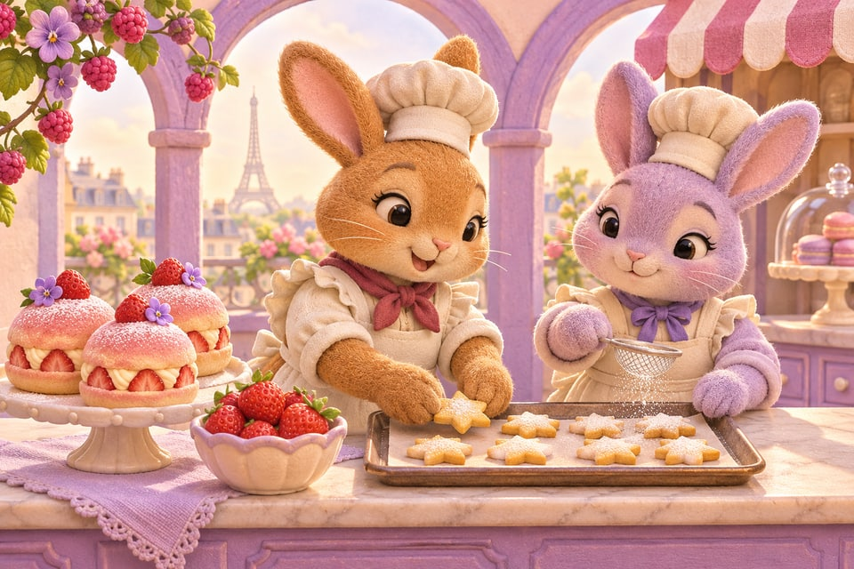

לוח הכפל
מאפיית הכפל
פותרים תרגילי כפל עד 10×10, נעזרים בעוגיות וממלאים מגש אחר מגש.
לפתוח ולשחקהמשחקים והמיני־פרויקטים שלי, במקום אחד. בוחרים משהו מסקרן ופותחים מיד בדפדפן.
לבחור משחק
פותרים תרגילי כפל עד 10×10, נעזרים בעוגיות וממלאים מגש אחר מגש.
לפתוח ולשחק
הופכים קלפים ומחפשים כלי רכב תאומים. בכל שלב מצטרף זוג חדש.
לפתוח ולשחק
עוקפים שוער, מתזמנים ירי קורים עם ספיידרמן ומטיסים כדור דרך טבעות.
לפתוח ולשחקמשמרת לילה על הים. מכוונים את האור ועוזרים לסירות למצוא את הדרך.
לפתוח ולשחקמסיבה קטנה לאיימי. בוחרים אביזר, רוקדים עם הבובות ואוספים כוכבים.
לפתוח ולשחק